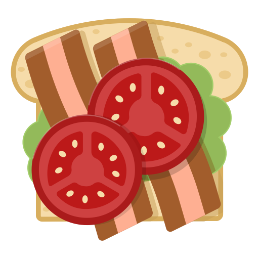
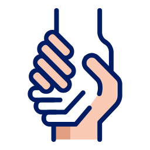
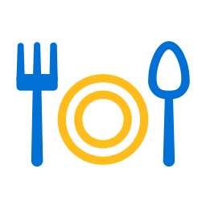

<!--
  <ion-header translucent>
    <ion-toolbar>
      <ion-title>Welcome</ion-title>
    </ion-toolbar>
  </ion-header>
-->
<ion-content class="ion-padding" fullscreen scroll-y="false">
  <ion-slides *ngIf="true" pager="true">
    <ion-slide>
      
      <h2>We are <b>SaveFood</b></h2>
      <p class="slide-content">SafeFood is a service that helps connect people or notify each other
        about available food they wish to consume or donate. When people access the
        application, they can view a list of food offered in locations, so they can pick
        these items up.</p>
    </ion-slide>

    <ion-slide>
      
      <h2>Be a donor</h2>
      <p class="slide-content">Everyone has experienced buying or consuming large quantities of food out of
        which, some is left over and could get thrown away. Thus, the above problems
        can be solved by matching with those who need it.</p>
    </ion-slide>

    <ion-slide>
      
      <h2>Be a Consumer</h2>
      <p class="slide-content">Members of organizations
        such as a charity, a church, an orphanage, or a homeless shelter can utilize the
        application to benefit the community on a larger scale.</p>
    </ion-slide>

    <ion-slide>
      
      <h2>Start contributing to your society today</h2>
      <ion-button [routerLink]="['/login']" routerLinkActive="router-link-active">Log in <ion-icon slot="end"
          name="arrow-forward"></ion-icon>
      </ion-button>
    </ion-slide>
  </ion-slides>
</ion-content>